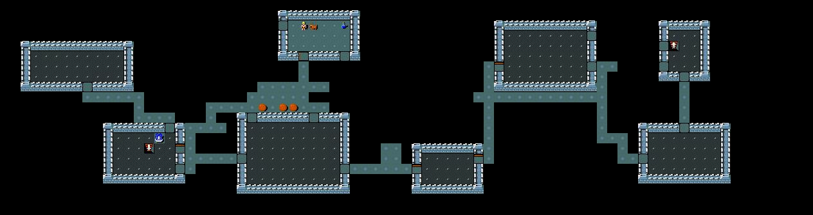
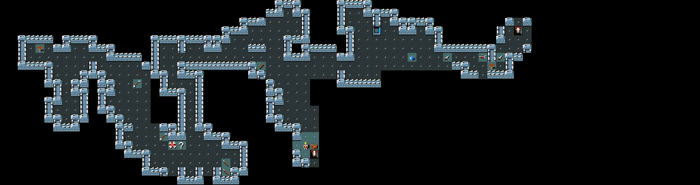
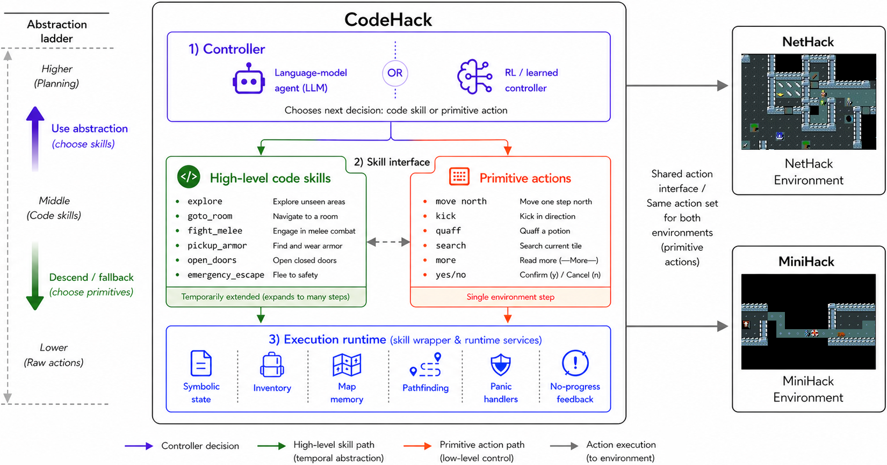
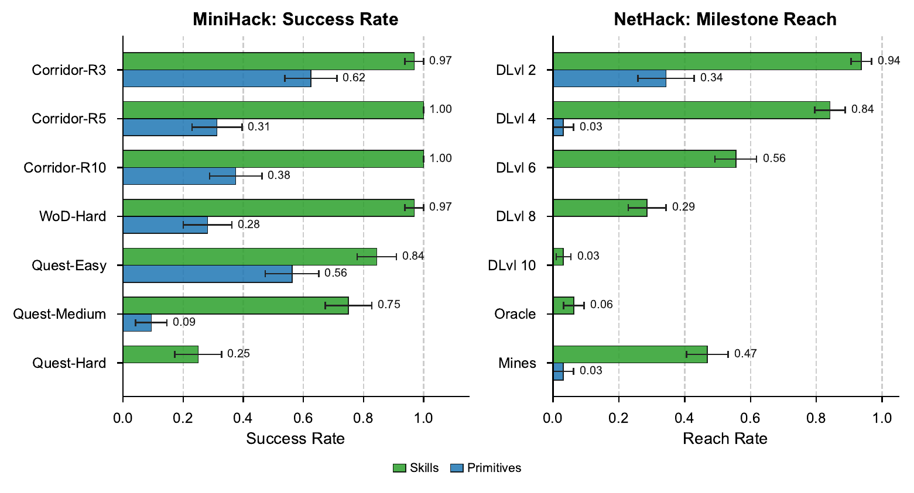
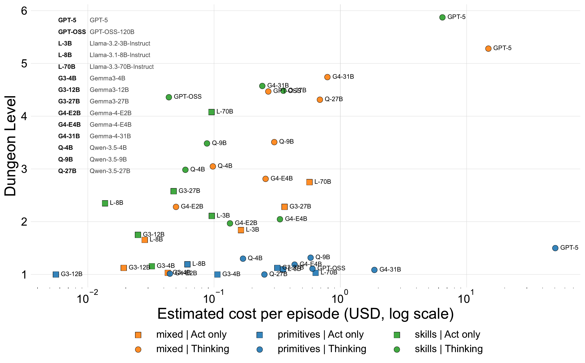

NetHack exploration
The agent uses semantic exploration skills to traverse rooms, follow corridors, and keep progress moving across long episodes.
Code-based skills for long-horizon language agents
We study when language agents should act through low-level primitives, reusable code skills, or both, using CodeHack as an intermediate control layer for NetHack and MiniHack.
Abstract
The core question is whether language agents should stay at one level of action abstraction, or move flexibly between primitive commands and semantic skills.
Acting and learning in long-horizon environments remains challenging for language agents, especially on tasks requiring low-level action control such as games. We study the value of higher-level, semantically meaningful code skills in addition to or instead of low-level primitives. To do so, we develop CodeHack, a rich library of code-based skills with natural-language descriptions for NetHack and MiniHack. In our evaluations across zero-shot prompting, supervised fine-tuning, and reinforcement learning, skill-based interfaces improve game progression, reduce estimated inference cost, and accelerate learning relative to primitive-only control. Mixed control retains much of the skill benefit while preserving a path back down to primitive actions when abstractions are insufficient.
Rollouts
These rollouts show how code skills expand one high-level choice into many environment actions, while mixed control lets the agent drop back to primitives when the situation calls for it.

The agent uses semantic exploration skills to traverse rooms, follow corridors, and keep progress moving across long episodes.

The controller alternates between reusable skills and local primitive actions when high-level routines need fine-grained correction.
MiniHack videos highlight targeted behaviors such as navigation, combat, item use, and exploration under controlled task layouts.
Motivation
Long-horizon agents must adapt across changing contexts, recover from errors, and use their inference budgets carefully.
As language models become autonomous agents, they are increasingly asked to solve complex, long-horizon problems in software engineering, computer use, games, and embodied control. Success in these settings requires extended interaction, adaptation to changing contexts, recovery from mistakes, and careful use of inference budget. Yet many agents still operate through low-level action interfaces, where even simple behaviors expand into long, brittle sequences of small decisions. Coding agents make this tension concrete: an agent forced to type one keystroke at a time would spend its reasoning budget on mechanics rather than design, while real programmers rely on functions, libraries, tools, and editor commands that package many low-level operations into meaningful units. Similar needs arise beyond software, where reusable routines can handle common behavior but fine-grained control is still needed when a routine fails in an unusual state. We study this abstraction tradeoff in NetHack and MiniHack through CodeHack, a library of temporally extended code skills that can be described in language, inspected as source code, executed cheaply, and combined with primitive actions. NetHack is a useful testbed because agents must act under partial observability, switch between exploration, navigation, combat, resource management, and tool use, and recover from local failures. This makes pure skill abstraction incomplete in practice and motivates agents that can move flexibly up and down the abstraction ladder.
Approach
CodeHack is an intermediate control layer between a language-model or RL controller and the NetHack or MiniHack environment.

Skills correspond to recognizable behaviors such as exploration, combat, equipment management, and terrain interaction.
Each skill is a testable Python procedure that can run across many states, layouts, and episodes.
Agents can move back down to primitive control when high-level abstractions are incomplete or fail locally.
Zero-Shot Evaluation
In the controlled MiniHack suite and NetHack milestone evaluation, GPT-5 succeeds more often with skills and reaches deeper milestones than with primitive-only control.

With GPT-5, skills produce higher MiniHack success rates and NetHack milestone reach than primitive-only control across the evaluated tasks.
Cost-Performance Frontier
Cost is estimated from token prices. Skills reduce model calls by executing many low-level steps locally inside the CodeHack runtime.

Skill-based agents generally move the frontier upward and left relative to primitive-only control.
Citation
If you use this repository in your work or otherwise wish to cite it, use the BibTeX entry below.
@misc{cupial2026abstractionladder,
title = {Up and Down the Abstraction Ladder: Code-Based Skills for Language Agents},
author = {Cupial, Bartlomiej and Tuyls, Jens and Wolczyk, Maciej and Paglieri, Davide and Klissarov, Martin and Eysenbach, Benjamin and Milos, Piotr and Narasimhan, Karthik R.},
year = {2026},
note = {Preprint}
}